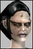

Minate
LeetRegistered: Jan 2003
Posts: 1 | Nano-Techie Newbie Is there a guide to beginning down the path to becoming a decent nano-techie....I want to use something besides the god awful pistol they give you at the beginning. |
Phallisto
Supa Leet
 Registered: Dec 2002
Posts: 31 | If you're really low lev then the Ice Flechette nano works nicely. Much much better than the pistol. |
Claybats
Phear Leet
 Registered: Nov 2001
Posts: 42 | |
Soyuz
CDR advocateRegistered: Jun 2002
Posts: 379 | Nano Tech is another of those profs which has no clear choice of weapons (apart from nanos, obviously) since all your choices are more of less equally expensive.
Of the lot though, pistol is the cheapest and can be raised to higher levels than the rest. It has some implant conflicts with Matter Creation which closes the gap (MG/SMG and Shotgun can equal it, implanted) but on the plus side there are some interesting pistols which buff useful stats.
Almost anything is better than the startup gun. Assuming you decide to stick with pistol, use any pistol or pistol/flingshot weapons you pick up. Pistols that use burst have their place too (see later), but can be costly in terms of ip. Stay away from full-auto pistols as a general rule - they're just bad.
The best pistol you can get hold of is the Original Electronicum, a straight pistol weapon that buffs your NCU slightly and does heavy damage. It's boss loot, so you'll find it in team missions or on camp bosses.
Barring that, the Sentinels ETE Strike Gun is a good pistol/fling weapon that can be found as a mission reward or bought in shops. Doesn't do the same sort of damage as the Electronicum, but definitely the best of the rest. The OT Boomer M30 is also a good contender. It's slower than the Strike Gun but has a much bigger crit, so if you have a scope or regular access to crit buffs it might be a good choice. Note that it only goes up to QL120 though.
At low levels you might also look out for Old English Trading Co. pistols. They use pistol/fling and buff Intelligence by 5pts each. Not great for damage, but if they let you cast a bigger nuke it can be worth it.
Once you pass level 41, consider a trip to the Foreman's Mine on The Longest Road. The Lab Director there drops the Customized Desert Reet which is good enough that you could still be using it happily in 100 levels time. You'll need a team to fight your way through to the Director's office, and bear in mind that the Custom Reet is a QL80 weapon, so you might have some difficulty equipping it at level 41. That said, it's fast and very powerful.
Once you have your Reet equipped and have picked up a few more levels, consider raising Multi-Ranged enough to equip a second pistol. The Reet/Electronicum combo is said to be particularly nasty, for instance. Since the Custom Reet has modest multi-ranged reqs, this is a cheap way to boost your firepower at higher levels.
More unusual choices: NT's can actually raise 2H-blunt and 2H-edged to the same levels as Shotgun or MG/SMG. If you're an Atrox you might consider the Support Beam. Normal Beams are found as mission rewards or as boss loot. The Support Beam of Intolerance is found in the subway dungeon, but is really designed for Enforcers. If you're not Atrox and/or you just want to be different, there are a variety of two-handed katanas which might work. Stay away from anything that requires too many skills to use though, eventually you're likely to run out of ip for it.
Cheers,
~R~ |
Nochnaja
Eleet
 Registered: Oct 2002
Posts: 23 | Don't forget Soft Pepper pistols....they buff all your nano skills, but don't do much damage. You can run w/o a weapon for a while and spend IP on nano skills and the like instead...but eventually you'll have to get some damage from your weap, and pistol prolly won't cut it. __________________
__________________
Nochnaja
Keep safe, and may the clans fear you.
|
Sweede
Supa Leet
 Registered: Oct 2002
Posts: 28 | I do rather pathetic dmg with my pistol at 26 compared to my nanos, i use a tactical PNG something, has nice crits but normal dmg is not that super. |
Soyuz
CDR advocateRegistered: Jun 2002
Posts: 379 | The PNG Tactical is something my Engineer resorted to when the level 50 title cap was making IP really tight. Unfortunately, although it has a reasonable minimum damage it's almost entirely crit dependent. It'll fool you in the first 10-15 levels, since base damage there will be OK, but it drops off rapidly. Overall, it's a good gun for high-level characters if you have access to crit buffs and/or good scopes, but not great at lower levels.
If ip is tight, go for a simple pistol/fling setup. Fling always has very low reqs, around half the pistol reqs, so it doesn't eat through your ip. I recommended a couple of good pistol/fling weapons in the post above. If your ip situation is not so bad, consider raising burst and trying a Desert Reet. These are pretty good in the lower levels, and allow you to equip the Custom Desert Reet later in the game. However, don't raise burst just because you have the ip spare if you find a pistol/fling weapon that's working for you.
Ideally at your level you want an Original Electronicum. Do enough boss missions (or hit enough dynacamps) and one will fall into your lap sooner or later. Compared to the PNG, you won't believe the damage you'll be able to do.
Cheers,
~R~ |
Servivious
Supa Leet
 Registered: Dec 2001
Posts: 163 | I found the best way at lower levels was to concentrate on nuke dmg, and find a fast weapon (1.5/1.5 slowest) with low reqs to add a little between nukes. Until you get 600+ nano init, you're always waiting around for recharge, so if you can get a hit off then, you can add nicely to your total dmg output. That said, when the IPR came around I dumped all weapon skills, and am totally dependant on nukes - not a great idea when debuffed, slowed, or not in a team...
I'm looking to get into x-3 (like everyone else) but I'm gonna stay nuke only unitl I get spare IPs - 130-140 ish I guess. __________________
__________________
Please allow me to introduce you to the voices:
The voices, the voices! Stop the voices!
The voices are played by, in order of appearance:
Gragoneye - loveable, hugable, with a fondness for violence! - Destination Ubah -
Servivious - bitter, twisted and a little unhinged..
Blindhealer - just a little bit out of her depth!
Proud to be First Order!!
|
HurfBurf
Phear Leet
 Registered: Mar 2002
Posts: 35 | |


 Last Thread Next Thread
Last Thread Next Thread 
 January 24th, 2003 11:22
January 24th, 2003 11:22